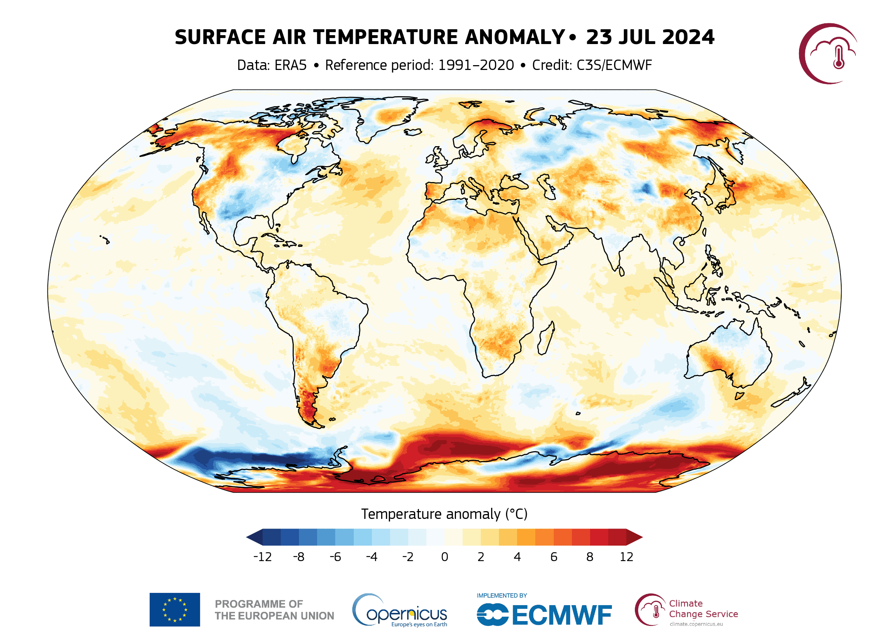
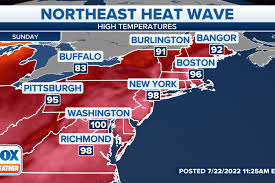

This article was originally published on 23 July 2024, and has been updated on 24 and 25 July 2024 to reflect the latest statistics and records.
The Earth has just experienced its warmest day in recent history, according to the Copernicus Climate Change Service (C3S) data. On 22 July 2024, the daily global average temperature reached a new record high in the ERA5 dataset*, at 17.16°C. This exceeds the previous records of 17.09°C, set just one day before on 21 July 2024, and 17.08°C, set a year earlier on 6 July 2023.
Based on data released by C3S on 25 July, Monday 22 July was the hottest day in the ERA5 dataset, which begins in 1940. The temperature on 23 July was very similar, at 17.15°C**.
While the temperature on 21 July 2024 (17.09ºC) was almost indistinguishable from the previous record of 17.08ºC reached on 6 July 2023, the difference between these and the new record temperature (17.16°C) reached on 22 July is larger than typical differences in day-to-day variations among alternative datasets.
What really stands out is also the difference between the temperatures since July 2023 and all previous years. The data can be explored in Climate Pulse, the C3S application that provides historical and near-real-time temperature data from the ERA5 reanalysis dataset.
.
What caused this new record global average temperature?

Annual maximum daily global average temperatures in the ERA5 record for the past 50 years (1974 to 2024). The ten highest annual maximum temperatures are highlighted in dark red. Data for 2024 are available up to 23 July 2024 at the time of publishing. Data source: ERA5. Credit: C3S/ECMWF.
The global average temperature tends to reach its annual peak between late June and early August, coinciding with the northern hemisphere summer. This is because the seasonal patterns of the northern hemisphere drive the overall global temperatures. The large land masses of the northern hemisphere warm up faster than the oceans of the southern hemisphere can cool down during the northern summer months.
The global average temperature was already at near-record levels in recent days, slightly below the levels of 2023, after being at record levels for the time of year for more than a year.
Our analysis suggests that the sudden rise in daily global average temperature is related to much above-average temperatures over large parts of Antarctica. Such large anomalies are not unusual during the Antarctic winter months, and also contributed to the record global temperatures in early July 2023. What’s more, Antarctic sea ice extent is almost as low as it was at this time last year, leading to much above-average temperatures over parts of the Southern Ocean.
Day 2 Of Covering Climate Change
Following Three Hottest Days on Record, Secretary-General Launches Global Action Call to Care for Most Vulnerable, Protect Workers, Boost Resilience Using Data, Science
This has been a week of unprecedented heat. First, the European Union’s Copernicus Climate Change Service declared Sunday, 21 July, as the hottest day on record. Then on Monday, 22 July, the mercury climbed even higher. And now we have just received preliminary data indicating that Tuesday, 23 July, was in the same range. In other words, this past Sunday, Monday and Tuesday were the three hottest days on record.
On Monday, 22 July, the mercury climbed even higher. And now we have just received preliminary data indicating that Tuesday, 23 July, was in the same range. In other words, this past Sunday, Monday and Tuesday were the three hottest days on record.But, let’s face facts: extreme temperatures are no longer a one day, one week or one month phenomenon. If there is one thing that unites our divided world, it’s that we’re all increasingly feeling the heat. Earth is becoming hotter and more dangerous for everyone, everywhere.
Billions of people are facing an extreme heat epidemic — wilting under increasingly deadly heatwaves, with temperatures topping 50°C around the world. That’s 122°F. And halfway to boiling.
This has been a week of unprecedented heat. First, the European Union’s Copernicus Climate Change Service declared Sunday July 21st as the hottest day on record. Then on Monday July 22nd, the mercury climbed even higher.
And now we have just received preliminary data indicating that Tuesday July 23rd was in the same range.
In other words, this past Sunday, Monday and Tuesday were the three hottest days on record.
But let’s face facts: extreme temperatures are no longer a one day, one week or one month phenomenon.
If there is one thing that unites our divided world, it’s that we’re all increasingly feeling the heat.
Earth is becoming hotter and more dangerous for everyone, everywhere.
Billions of people are facing an extreme heat epidemic -- wilting under increasingly deadly heatwaves, with temperatures topping 50 degrees Celsius around the world. That’s 122 degrees Fahrenheit. And halfway to boiling.
This year, we’ve seen a deadly heatwave hit the Sahel – with spiking hospitalisations and deaths.

Day 3 Of Covering Climate Change
Climate and finance crises could leave 600 million hungry by 2030
The IFAD chief told The Thomson Reuters Foundation that floods, droughts and high temperatures driven by climate change are exacerbating hunger and malnutrition around the world. Govt to give Rs 10,000 to every flood-affected family.
Climate-driven shocks, coupled with scant finance and government action, will leave nearly 600 million people living in hunger by 2030, the head of the United Nations International Fund for Agricultural Development (IFAD) told The Thomson Reuters Foundation in an interview.
Speaking ahead of Wednesday's launch of IFAD's report on the global state of hunger and nutrition, the agency's president Alvaro Lario said that missing the UN's Sustainable Development Goal of zero hunger by 2030 would lead to more forced migration, fewer new jobs and worsening conflict over resources, especially in regions with growing populations such as Africa.
More than a third of the world's population – about 2.8 billion people – could not afford a healthy diet in 2022, the report said.
"Urgent steps are needed if we want to really bring down the numbers of almost 600 million of chronically undernourished people by 2030," Lario said, adding, "the reality is we know how to do it, it's just a matter of political will."
The IFAD chief told The Thomson Reuters Foundation that floods, droughts and high temperatures driven by climate change are exacerbating hunger and malnutrition around the world.
He also blamed the lack of infrastructure to cope with climate shocks, debt-ridden economies and large gaps in climate finance for food production, storage and distribution.
This could hamper the UN's new plan, presented at COP28 last year, to end hunger and malnutrition without breaching the Paris Agreement goal of limiting global warming to 1.5 degrees Celsius.
The report pointed out that lack of improvement in food security and uneven access to healthy diets could lead to 582 million people being chronically undernourished by the end of the decade, more than half of them in Africa.